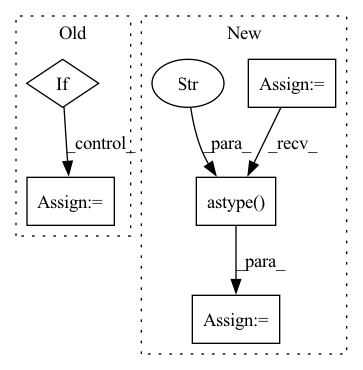

Pattern ID :41581
Before Change
out_img = np.moveaxis(out_img, 0, 2) // swap channel from 1st to 3rd position: ch, _, _ -> _, _, chr
// for saving_freq == -1 save only the final result (otherwise save with frequency saving_freq and save the last pic)
if img_id == num_of_iterations-1 or (saving_freq > 0 and img_id % saving_freq == 0):
// print(np.min(out_img), np.mean(out_img), np.max(out_img))
// _ = plt.hist(out_img[:, :, 0], bins="auto") // arguments are passed to np.histogram
// plt.title("Histogram with "auto" bins")
// plt.show()
np.save(os.path.join(dump_path, "out.npy"), out_img)
out_img = Image.fromarray(np.uint8(get_uint8_range(out_img)))
out_img.save(os.path.join(dump_path, str(img_id).zfill(img_format[0]) + img_format[1]))
if should_display:
plt.imshow(np.uint8(get_uint8_range(out_img)))After Change
if img_id == num_of_iterations-1 or (saving_freq > 0 and img_id % saving_freq == 0):
img_format = config["img_format"]
out_img_name = str(img_id).zfill(img_format[0]) + img_format[1] if saving_freq != -1 else generate_out_img_name(config)
dump_img = np.copy(out_img)
dump_img += np.array(IMAGENET_MEAN_255).reshape((1, 1, 3))
dump_img = np.clip(dump_img, 0, 255).astype("uint8" )
cv.imwrite(os.path.join(dump_path, out_img_name), dump_img[:, :, ::-1])
if should_display:
plt.imshow(np.uint8(get_uint8_range(out_img)))
plt.show()In pattern: SUPERPATTERN
Frequency: 4
Non-data size: 5
Instances Fragment ID: 116902263
Project Name: gordicaleksa/pytorch-neural-style-transfer
Commit Name: 6856e5796971c3fb5e77c0a798b35e6e106b5bcb
Time: 2020-03-30
Author: gordicaleksa@gmail.com
File Name: utils/utils.py
M Class Name: AnonimousClass
N Class Name: AnonimousClass
M Method Name: save_and_maybe_display(6)
N Method Name: save_and_maybe_display(7)
M Parent Class:
N Parent Class:
M File Name: utils/utils.py
N File Name: utils/utils.py
M Start Line: 61
M End Line: 75
N Start Line: 74
N End Line: 86
Before Change
faces, probabilities = self.face_detector(image, return_prob=True)
if self.keep_all:
// All faces and probabilities are grouped in the first dimension of the first batch element
faces = faces[0]
probabilities = probabilities[0]
results = [After Change
batch = blob
results = []
batch = np.asarray(batch)
with torch.no_grad():
image_batch = batch.astype("float32" )
image_batch = torch.from_numpy(image_batch).to(self.device)
facesBatch, probabilitiesBatch = self.face_detector(image_batch, return_prob=True)
for faces, probabilities in zip(facesBatch, probabilitiesBatch):
batched = [] Fragment ID: 116902279
Project Name: jina-ai/jina-hub
Commit Name: 2f1cabf02092ccb9c705c061937a4055f8c7b73c
Time: 2021-04-27
Author: zhuoran.zhang@jina.ai
File Name: segmenters/image/FaceNetSegmenter/__init__.py
M Class Name: FaceNetSegmenter
N Class Name: FaceNetSegmenter
M Method Name: segment(2)
N Method Name: segment(2)
M Parent Class: BaseSegmenter,TorchDevice
N Parent Class: BaseSegmenter,TorchDevice
M File Name: segmenters/image/FaceNetSegmenter/__init__.py
N File Name: segmenters/image/FaceNetSegmenter/__init__.py
M Start Line: 78
M End Line: 101
N Start Line: 75
N End Line: 96
Before Change
self.test_features, self.test_label, self.test_ids, self.test_dataset = _
def __convert_to_binned_data(self):
if not self.input_trainset:
return
out = pd.Series(self.train_features.columns).apply(
lambda x: pd.cut(self.train_features[x], bins=self.xgb_config.num_bins,
retbins=True, labels=range(self.xgb_config.num_bins))
)After Change
max_num_value=self.xgb_config.cat_max_num_value,
max_num_value_type=self.xgb_config.cat_max_num_value_type)
self.cat_columns = cat_columns
self.cat_feature_names = []
if len(cat_columns) > 0:
self.cat_feature_names = self.train_features.columns[cat_columns].to_list()
self.train_features[self.cat_feature_names] = self.train_features[self.cat_feature_names].astype("category" )
def f(x):
if self.train_features[x].dtypes == "category":
value_counts = self.train_features[x].value_counts() // descending order
if value_counts.shape[0] > self.xgb_config.num_bins:
values = value_counts.index.to_list()
list_unique = values[:self.xgb_config.num_bins - 1]
list_group = values[self.xgb_config.num_bins - 1:]
uniques = np.array(list_unique + [list_group], dtype=np.object)
value_map = {v: i for i, v in enumerate(list_unique)}
value_map.update({v: len(list_unique) for v in list_group})
codes = self.train_features[x].map(value_map)
else:
codes, uniques = pd.factorize(self.train_features[x], na_sentinel=0) // na_sentinel will not be activated actually
uniques = uniques.to_numpy()
// uniques: array of values that belongs to the same category
// codes: binned values
return pd.Series(codes, name=x), uniques.tolist()
else:
binned_values, split_points = pd.cut(self.train_features[x], bins=self.xgb_config.num_bins, retbins=True, labels=range(self.xgb_config.num_bins))
return binned_values, split_points
if self.input_trainset:
out = pd.Series(self.train_features.columns).apply(f)
if self.xgb_config.num_bins <= 256:
dtype = np.uint8 Fragment ID: 116902276
Project Name: paritybit-ai/xfl
Commit Name: a6710810b4149384ddc5a3d98d65f180214ec52f
Time: 2022-08-25
Author: hwang_ustc@aliyun.com
File Name: python/algorithm/framework/vertical/xgboost/base.py
M Class Name: VerticalXgboostBase
N Class Name: VerticalXgboostBase
M Method Name: __convert_to_binned_data(1)
N Method Name: __convert_to_binned_data(1)
M Parent Class: VerticalModelBase
N Parent Class: VerticalModelBase
M File Name: python/algorithm/framework/vertical/xgboost/base.py
N File Name: python/algorithm/framework/vertical/xgboost/base.py
M Start Line: 62
M End Line: 77
N Start Line: 72
N End Line: 124
Before Change
:param rank:
:return:
if rank:
ic = pred_label.groupby(level="datetime").apply(
lambda x: x["label"].rank(pct=True).corr(x["score"].rank(pct=True))
)
else:After Change
],
axis=1,
)
_ic = ic_df.iloc(axis=1)[0]
_index = _ic.index.get_level_values(0).astype("str" ) .str.replace("-", "").str.slice(0, 6)
_monthly_ic = _ic.groupby(_index).mean()
_monthly_ic.index = pd.MultiIndex.from_arrays(
[_monthly_ic.index.str.slice(0, 4), _monthly_ic.index.str.slice(4, 6)],
names=["year", "month"], Fragment ID: 116902271
Project Name: microsoft/qlib
Commit Name: 2f5ce3dc01e6209520bd0d9bda52ed6d0188398e
Time: 2022-12-30
Author: qianyun210603@hotmail.com
File Name: qlib/contrib/report/analysis_model/analysis_model_performance.py
M Class Name: AnonimousClass
N Class Name: AnonimousClass
M Method Name: _pred_ic(2)
N Method Name: _pred_ic(2)
M Parent Class:
N Parent Class:
M File Name: qlib/contrib/report/analysis_model/analysis_model_performance.py
N File Name: qlib/contrib/report/analysis_model/analysis_model_performance.py
M Start Line: 113
M End Line: 161
N Start Line: 120
N End Line: 187